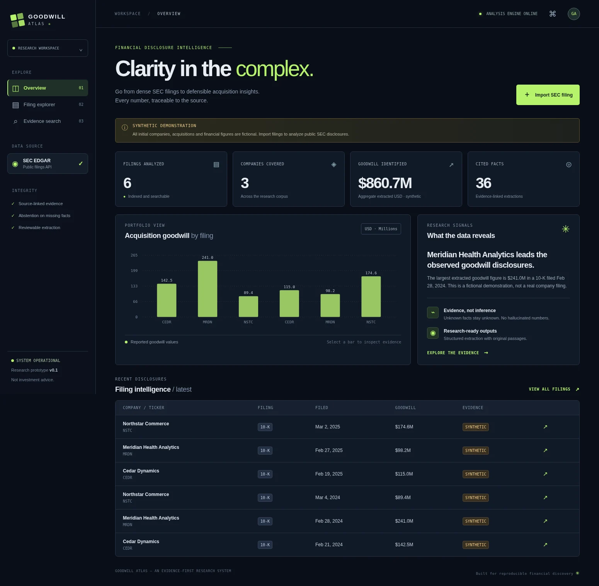

01 / PROJECT HELLO, I'M PARVATHI / SOFTWARE ENGINEER
Making complex
systems feel
effortless.
I build dependable backend infrastructure and applied AI tools—turning hard technical problems into software that runs better, scales further, and is easier to trust.
Previously at GoogleMS Computer Science · UF '27
SYSTEMS / ARCHITECTURE BUILT TO SCALE
ENGINEERING × IMPACTGOOGLE / UF / OPEN SOURCE
40%estimated lower
peak heap
peak heap
Reliability first
SCROLL TO EXPLORE01 — 05
MEASURABLE WORK
Numbers tell part of the story.
Engineering makes them happen.
10K+concurrent routing resources
supported at Google
supported at Google
85%automated test coverage
across 20+ services
across 20+ services
47%lower mean time to detect
at Freightify
at Freightify
01 / SELECTED WORK
Built with intent.
Three different problems, one approach: understand the system, prove the result, and make it useful.
A FEW THINGS I'VE
WORKED ON ↘
WORKED ON ↘
02 / WHERE I'VE BUILTShipping software.
Shipping software.
Solving problems.
Across infrastructure, logistics, and data platforms, I focus on performance, reliability, and the engineering practices behind dependable products.
Full resume01 / MOST RECENT2026
Software Development Intern · Sunnyvale, California
Modernized parts of the GKE Gateway Controller for typed Kubernetes APIs and safer infrastructure migrations.
10,000+ routing resources40%* lower peak heap30% faster CPU resync
* Memory reduction was estimated.
02 / SOFTWARE ENGINEERING2024 — 2025
Freightify
Software Development Engineer · India
Built backend services, real-time data pipelines, pricing features, and observability for a freight technology platform.
5,000+ platform customers25% lower latency85% test coverage
03 / DATA PLATFORMS2021 — 2024
PromptCloud
Software Development Engineer & Intern · India
Worked on high-throughput ETL, scalable crawlers, monitoring, and release automation for data-intensive services.
750+ GB data processed50% higher throughput65% faster incident detection
03 / UNIVERSITY OF FLORIDA
Curiosity, applied.
Research that bridges machine learning and real engineering workflows.
MS COMPUTER SCIENCE
EXPECTED MAY 2027
EXPECTED MAY 2027
RESEARCH / FINANCIAL NLP
Finding reliable answers
in SEC filings.
Under Prof. Johannes (Joost) Impink, built a retrieval-augmented pipeline using OpenAI embeddings, LangChain, and FAISS to analyze goodwill disclosures from 500+ filings.
Goodwill Atlas is an independently developed extension of this research area.
RESEARCH / AUTONOMOUS PERCEPTION
Teaching machines
to understand space.
Under Prof. Ivan Ruchkin, explored RGB and LiDAR perception on nuScenes using PyTorch and Open3D, processing 32K+ points per frame.
PointLab makes related geometric-processing concepts interactive; it is not a validated driving predictor.
04 / ABOUT MEA little about
A little about
how I think.
I like the kind of engineering you might never notice—because it's simply working.
My work connects low-level performance questions with real product needs: reliable services, clear APIs, observable systems, and practical ML tooling. I care about finding the real bottleneck, measuring the difference, and leaving the codebase easier to work with.
PythonGoJavaC++KubernetesKafkaAWSSQLREST / gRPCDockerPyTorchCI/CD
EDUCATIONMaster of Science, Computer Science · University of Florida (expected May 2027)Bachelor of Technology, Computer Science & Engineering · RGUKT
05 / LET'S CONNECTGood ideas deserve
Good ideas deserve
great engineering.
I'm interested in software engineering opportunities where thoughtful design and dependable systems make a real difference.